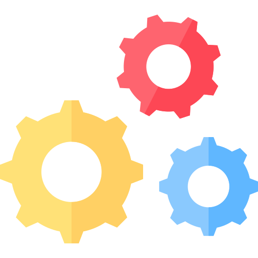

РАЗДЕЛ ВЕБ-РАЗРАБОТКИ
HTML-верстка
Утверждённый дизайн передаётся HTML-верстальщику, который «нарезает» графическую картинку на отдельные рисунки, из которых впоследствии складывает HTML-страницу. В результате создаётся код, который можно просматривать с помощью браузера. А типовые страницы впоследствии будут использоваться как шаблоны.
Программирование
Далее готовые HTML-файлы передают программисту. Программирование сайта может осуществляться как «с нуля», так и на основе CMS — системы управления сайтом. Веб-разработчики часто называют CMS «движком». В случае с CMS надо сказать, что сама «CMS» в некотором смысле это готовый сайт, состоящий из заменяемых частей. «Программист» — в данном случае правильно будет назвать его просто специалистом по CMS — должен заменить стандартный шаблон, поставлявшийся с CMS, на оригинальный шаблон. Этот оригинальный шаблон он и должен создать на основе исходного «веб-дизайна». При программировании сайта специалисту назначаются контрольные точки сроков.
Завершающим этапом разработки сайта является тестирование
Процесс тестирования может включать в себя самые разнообразные проверки: вид страницы с увеличенными шрифтами, при разных размерах окна браузера, при отсутствии флэш-плеера и многие другие. Также — юзабилити-тестирование. Обнаруженные ошибки отправляются на исправление до тех пор, пока не будут устранены. Сроки контролирует менеджер проекта. Также, на этом этапе привлекают к работе дизайнера, чтобы он провёл авторский надзор.
